关联需求：GT-12696 发信人黑白名单优化 ·
关联模块：发信人黑白名单（策略流水线 阶段2） ·
变更类型：文案变更 / 功能变更 / 功能移除 / 新增功能 ·
最后更新：2026-08-01 ·
webapp commit：9531e5b（基线）
| 字段 | 内容 |
|---|---|
| 规格类型 | 增量规格（Incremental）· 多变更点格式 |
| 需求名称 | GT-12696 发信人黑白名单优化 |
| 当前版本 | v2 |
| 生成日期 | 2026-08-01 |
| webapp commit | 9531e5b（基线） |
| 对照 spec commit | not-used |
| 历史对话记录 | 当前上下文已提供（完整代码变更记录、对话历史） |
| 事实源优先级 | 1. 用户当前描述；2. 运行中 webapp 浏览器真实截图；3. webapp 源码 |
| 浏览器验证状态 | 2026-08-01 实际运行截图（S-12 ~ S-18 全部完成） |
| 路由路径 | /zh/security/pipeline → 发信人黑白名单「配置」→ 黑名单规则 / 白名单规则 Tab → 新建规则抽屉 |
| 组件路径 |
src/components/security/sender-filter/SenderFilterTable.tsxsrc/components/security/sender-filter/SenderFilterDrawer.tsx
|
| 产品形态验证 | AI版·单租户 · 平台管理员（2026-08-01 截图） |
| 功能 / 元素 | 变更 | AI-单 平台管理员 |
传统-单 平台管理员 |
云-多 平台管理员 |
云-多 租户管理员 |
AI-多 平台管理员 |
AI-多 租户管理员 |
传统-多 平台管理员 |
传统-多 租户管理员 |
|---|---|---|---|---|---|---|---|---|---|
| 黑名单执行动作「拒收」（原「阻断」） | #1 | ✅ | ✅ | ✅ | ✅ | ✅ | ✅ | ✅ | ✅ |
| 黑名单执行动作「丢弃」（新增） | #2 | ✅ | ✅ | ✅ | ✅ | ✅ | ✅ | ✅ | ✅ |
| 执行动作下拉选项说明文字 | #3 | ✅ | ✅ | ✅ | ✅ | ✅ | ✅ | ✅ | ✅ |
| 白名单「查看配置示例」按 Tab 分类展示 | #4 | ✅ | ✅ | ✅ | ✅ | ✅ | ✅ | ✅ | ✅ |
| 白名单执行动作「投递」（原「放行」） | #5 | ✅ | ✅ | ✅ | ✅ | ✅ | ✅ | ✅ | ✅ |
| #5 | ❌ | ❌ | ❌ | ❌ | ❌ | ❌ | ❌ | ❌ | |
| 规则列表「优先级」列（黑/白名单） | #6 | ✅ | ✅ | ✅ | ✅ | ✅ | ✅ | ✅ | ✅ |
触发路径：AI版·单租户 · 平台管理员 → /zh/security/pipeline → 发信人黑白名单「配置」→ 黑名单规则 Tab → 点击「+ 新建规则」
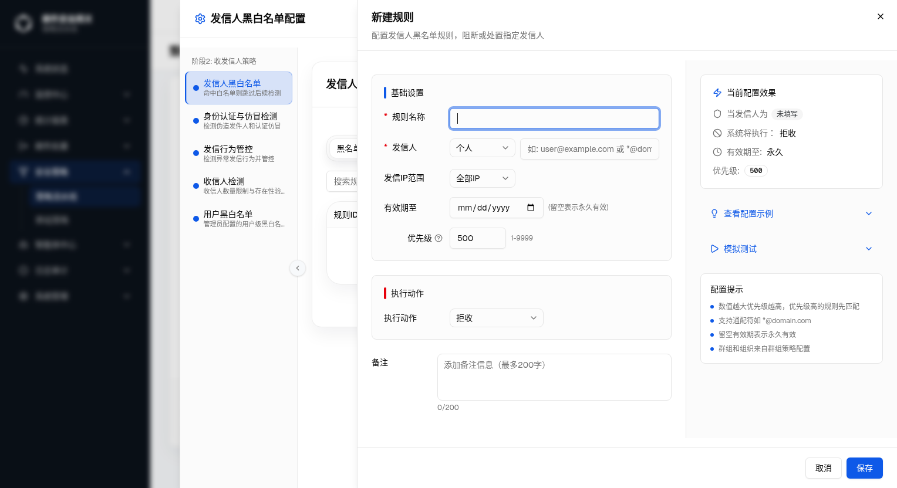
| 元素 | 内容 / 属性 | 备注 |
|---|---|---|
| 执行动作下拉默认值 | 拒收 | 原值「阻断」 |
| 当前配置效果 · 系统将执行 | 「拒收」 | 右侧预览区同步显示「拒收」 |
| 抽屉标题 | 新建规则 | 无变更 |
| 副标题 | 配置发信人黑名单规则，阻断或处置指定发信人 | 无变更 |
| 元素位置 | 变更前 | 变更后 | i18n key | 形态/角色差异 |
|---|---|---|---|---|
| 执行动作下拉 · 拒收选项文案 | 阻断 | 拒收 | senderFilter.actionReject（推断） |
[Base] 所有形态/角色一致 |
| 当前配置效果 · 执行文案 | 系统将执行：阻断 | 系统将执行：拒收 | 联动更新 | [Base] |
触发路径：S-15 基础上 → 点击「执行动作」下拉框
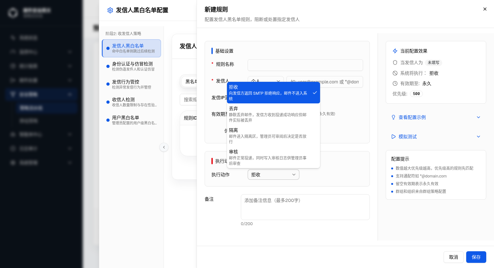
| 选项 | 说明文字（下拉内显示） | 状态 |
|---|---|---|
| 拒收（高亮选中） | 向发信方返回 SMTP 拒绝响应，邮件不进入系统 | 原「阻断」 |
| 丢弃 | 静默丢弃邮件，发信方收到投递成功响应但邮件实际被丢弃 | 新增 |
| 隔离 | 邮件进入隔离区，管理员可审阅后决定是否放行 | 无变更 |
| 审核 | 邮件正常投递，同时写入审核日志供管理员事后审查 | 无变更 |
| 元素 | 内容 | 位置 | 数据字段 | 形态/角色差异 |
|---|---|---|---|---|
| 执行动作下拉 · 丢弃选项 | 丢弃（含说明文字） | 拒收与隔离之间，第 2 个选项 | action: "discard"（推断） |
[Base] |
| 当前配置效果 · 执行文案（选择丢弃后） | 系统将执行：丢弃 | 右侧预览区 | 联动更新 | [Base] |
| 策略流水线图例（底部说明区） | 丢弃 · 直接删除不通知 | /zh/security/pipeline 页面底部「执行动作」图例 |
— | [Base] |
触发路径：黑名单新建规则抽屉 → 点击「执行动作」下拉
| 选项 | 说明文字内容 | 文字颜色 |
|---|---|---|
| 拒收 | 向发信方返回 SMTP 拒绝响应，邮件不进入系统 | 灰色（次级文本） |
| 丢弃 | 静默丢弃邮件，发信方收到投递成功响应但邮件实际被丢弃 | 灰色（次级文本） |
| 隔离 | 邮件进入隔离区，管理员可审阅后决定是否放行 | 灰色（次级文本） |
| 审核 | 邮件正常投递，同时写入审核日志供管理员事后审查 | 灰色（次级文本） |
触发路径：白名单规则 Tab → 点击「+ 新建规则」
| key | zh | en | 变更类型 |
|---|---|---|---|
senderFilter.action_reject | 拒收 | Reject | 已变更（原：阻断 / Block） |
senderFilter.action_reject_desc | 向发信方返回 SMTP 拒绝响应，邮件不进入系统 | Return an SMTP rejection response; the email never enters the system | 新增 |
senderFilter.action_discard | 丢弃 | Discard | 新增 |
senderFilter.action_discard_desc | 静默丢弃邮件，发信方收到投递成功响应但邮件实际被丢弃 | Silently drop the email; the sender receives a delivery-success response but the email is discarded | 新增 |
senderFilter.action_quarantine_desc | 邮件进入隔离区，管理员可审阅后决定是否放行 | Move the email to the quarantine queue for administrator review | 新增 |
senderFilter.action_audit_desc | 邮件正常投递，同时写入审核日志供管理员事后审查 | Deliver the email normally and write an audit log entry for later review | 新增 |
senderFilter.action_accept | 投递 | Deliver | 已变更（原：放行 / Allow） |
senderFilter.action_accept_desc | 允许邮件通过，跳过后续检测直接投递至收件箱 | Deliver the email directly to the inbox, bypassing further checks | 新增 |
| 选项 | 说明文字 | 适用列表类型 | 形态/角色差异 |
|---|---|---|---|
| 拒收 | 向发信方返回 SMTP 拒绝响应，邮件不进入系统 | 黑名单 | [Base] |
| 丢弃 | 静默丢弃邮件，发信方收到投递成功响应但邮件实际被丢弃 | 黑名单 | [Base] |
| 隔离 | 邮件进入隔离区，管理员可审阅后决定是否放行 | 黑名单 | [Base] |
| 审核 | 邮件正常投递，同时写入审核日志供管理员事后审查 | 黑名单 | [Base] |
| 投递 | 待确认（白名单下拉展开态未单独截图，见 Q-2） | 白名单 | [Base] |
| 标记投递 | 待确认（同上，见 Q-2） | 白名单 | [Base] |
setSkipSpf 运行时报错并跳转至黑名单 Tab。修复后改为按列表类型（黑名单/白名单）分类展示对应示例。
| 项目 | 内容 |
|---|---|
| 根因 | 原实现两个示例卡片的回调均硬编码 form.setValue('list_type', 'blacklist')，无论当前在哪个 Tab 均强制切换至黑名单 |
| 修复方案 | 示例区块改为按 watchListType 分支渲染：黑名单 Tab 显示「拒收垃圾邮件发送者」和「隔离可疑来源」；白名单 Tab 显示「放行可信发信人」和「放行可信域名」 |
| 移除 | 所有「使用该示例」回调中的 list_type 硬编码赋值全部移除，填充字段仅含 sender_config / ip_range / action / priority |
| 影响文件 | SenderFilterDrawer.tsx（CollapsibleContent 示例区块） |
触发路径：白名单规则 Tab → 点击「+ 新建规则」→ 观察右侧面板
| 元素 | 当前状态 | 修复前 | 修复后 |
|---|---|---|---|
| 「查看配置示例」折叠控件 | 默认折叠，可展开 | 展开后展示黑名单示例（拒收/隔离） | 展开后展示白名单示例（投递/标记投递） |
| 「使用该示例」动作 | 点击后将示例值填入表单 | 触发 setSkipSpf 运行时报错；跳转黑名单 Tab | 正确填入白名单字段；留在白名单 Tab |
| 元素 | 组件路径 | 修复内容 | 形态/角色差异 |
|---|---|---|---|
| 「查看配置示例」按 Tab 分类展示 | SenderFilterDrawer.tsx |
按 list_type（blacklist/whitelist）区分示例集合；移除 setSkipSpf 调用 |
[Base] |
whitelist_mode 保留，仅 UI 不再暴露）。
触发路径：发信人黑白名单配置弹窗 → 白名单规则 Tab
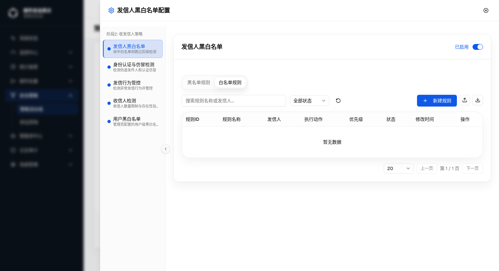
| 列 | 内容 |
|---|---|
| 执行动作列 | 白名单规则列中会显示「投递」或「标记投递」（数据态；暂无数据行展示） |
触发路径：白名单规则 Tab → 点击「+ 新建规则」
| 元素 | 当前状态 | 备注 |
|---|---|---|
| 执行动作下拉默认值 | 投递 | 原「放行」 |
| 当前配置效果 · 系统将执行 | 投递 | 右侧预览区同步 |
| 不存在（DOM 中无此字段） | 已移除类型/API 层保留 whitelist_mode | |
| 优先级默认值 | 800 | 白名单默认优先级 800（黑名单默认 500） |
| 元素 | 变更前 | 变更后 | 组件路径 | 形态/角色差异 |
|---|---|---|---|---|
| 白名单执行动作默认值 | 放行 | 投递 | SenderFilterDrawer.tsx |
[Base] |
| 显示（bypass_content / 其他） | 不显示（UI 已移除） | SenderFilterDrawer.tsx |
[Base] 所有形态均已隐藏 | |
| 白名单提交前校验 whitelist_mode 必填 | 校验已移除（superRefine） | SenderFilterDrawer.tsx |
[Base] |
触发路径：发信人黑白名单配置弹窗 → 黑名单规则 Tab（Mock 环境无数据，展示空态）
| 列序 | 列名 | 数据来源 | 对齐 | 备注 |
|---|---|---|---|---|
| 1 | 规则ID | rule.id | 左对齐 | 无变更 |
| 2 | 规则名称 | rule.name | 左对齐 | 无变更 |
| 3 | 发信人 | rule.senderConfig | 左对齐 | 无变更 |
| 4 | 执行动作 | rule.action | 左对齐 | 无变更 |
| 5 | 优先级 | rule.priority | 左对齐（tabular-nums） | 新增size=80，等宽数字 |
| 6 | 状态 | rule.isActive | 左对齐 | 无变更 |
| 7 | 修改时间 | rule.updatedAt | 左对齐 | 无变更 |
| 8 | 操作 | — | 右对齐 | 无变更 |
触发路径：发信人黑白名单配置弹窗 → 白名单规则 Tab
SenderFilterTable.tsx 渲染。| 元素 | 内容 | 组件路径 | i18n key | 形态/角色差异 |
|---|---|---|---|---|
| 优先级列表头 | 优先级 | SenderFilterTable.tsx |
senderFilter.priority |
[Base] |
| 优先级单元格 | 数字，tabular-nums，对应 row.original.rule.priority |
SenderFilterTable.tsx |
— | [Base] |
| 优先级列宽 | size=80（px） | SenderFilterTable.tsx |
— | [Base] |
| 优先级列位置 | 第 5 列，「执行动作」列之后、「状���」列之前 | SenderFilterTable.tsx |
— | [Base] |
状态 A — 基础格式检查默认态（三项均启用）
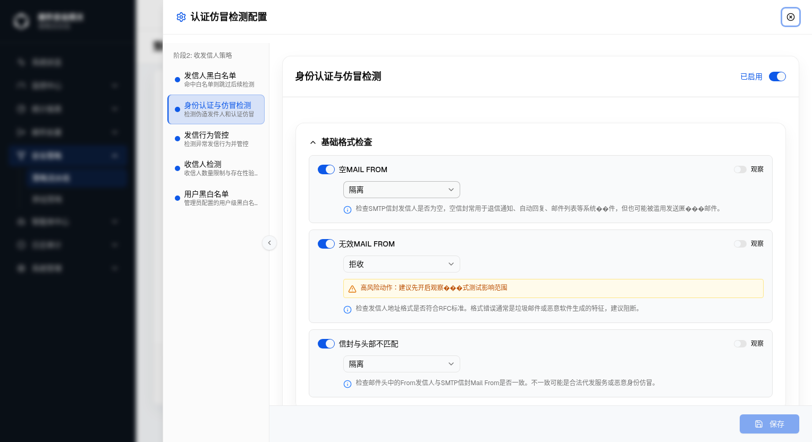
S-20 · 基础格式检查默认态。空MAIL FROM 执行动作=隔离；无效MAIL FROM 执行动作=拒收（高风险警告条）；信封与头部不匹配 执行动作=隔离。
状态 B — 观察模式开启（空MAIL FROM）
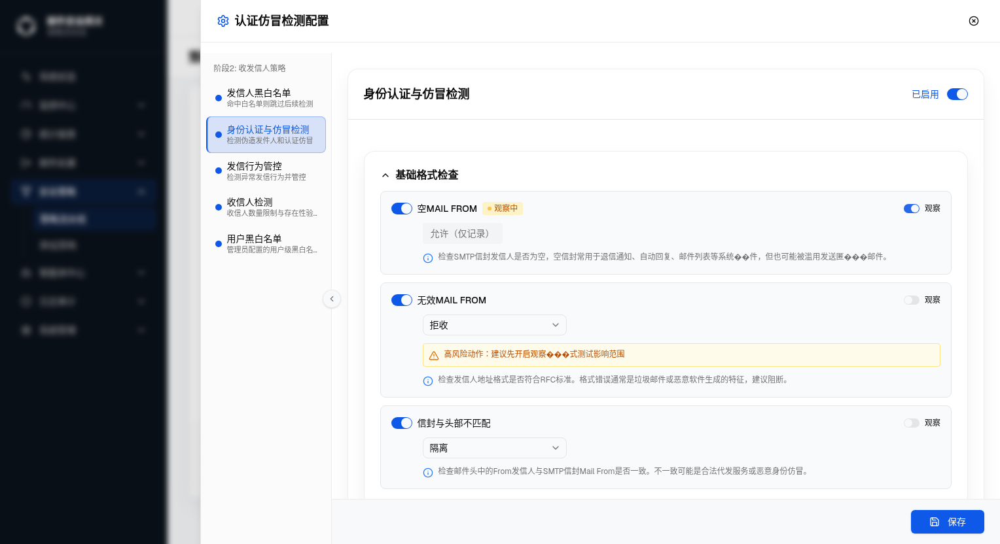
S-22 · 空MAIL FROM 观察模式已开启（观察模式开关=ON）。行右侧标注「观察」badge；执行动作下拉保持可见但功能受限。
状态 C — 检查项关闭态（空MAIL FROM enabled=false）
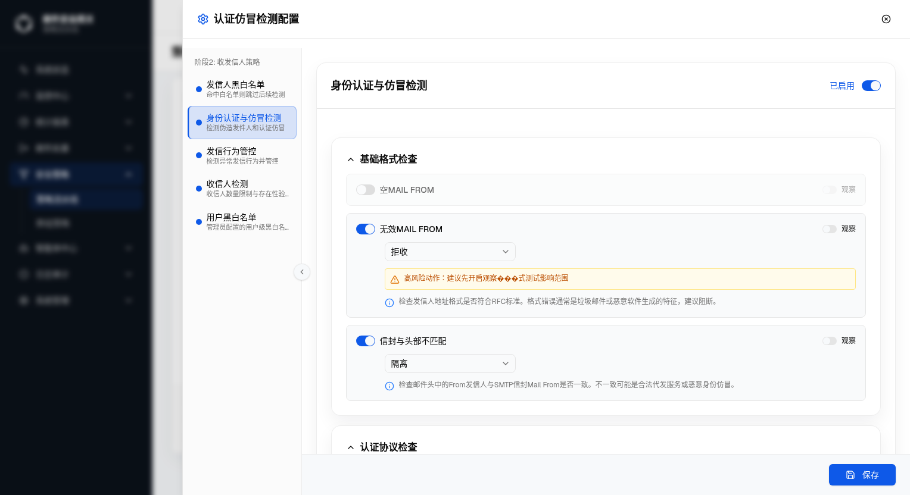
S-23 · 空MAIL FROM 检查项关闭（enabled=false）。行折叠为不可交互状态，执行动作 Select 及观察模式开关均 disabled。
| 元素 | 变更前 | 变更后 | 说明 |
|---|---|---|---|
| 执行动作选项集 | 允许（进行下一步检测）/ 隔离/审核 / 阻断并退信 / 静默丢弃（4项，含 accept） |
隔��� / 审核 / 拒收 / 丢弃（4项，移除 accept，新增 audit） |
与发信人黑白名单执行动作语义对齐；accept 在基础格式检查场景无业务意义，移除；audit 新增用于需要日志留存但不阻断的场景 |
| 「阻断并退信」→「拒收」 | 阻断并退信 (reject) |
拒收 (reject) |
文案精简，语义不变：均为向发信方返回 SMTP 拒绝响应 |
| 「静默丢弃」→「丢弃」 | 静默丢弃 (discard) |
丢弃 (discard) |
文案精简，语义不变：均为静默丢弃邮件 |
| 「隔离/审核」拆分为「隔离」+「审核」 | 隔离/审核 (quarantine) |
隔离 (quarantine) + 审核 (audit) |
原 quarantine 文案「隔离/审核」混淆两种语义；现拆分为独立选项：隔离=进隔离队列、审核=正常投递+写日志 |
| 遗留数据 fallback | 存量数据可能含 accept action |
前端加载时通过 normalizeFormatItem() 自动映射为 quarantine |
保证旧数据不会导致 Select 渲染 i18n key 原文；后端兼容处理由 BE 负责 |
| 影响检查项 | 空MAIL FROM · 无效MAIL FROM · 信封与头部不匹配（共 3 项）；其他模块（认证协议检查等）不受影响 | ||
| key（authSpoofing 命名空间） | zh | en | 变更类型 |
|---|---|---|---|
formatActionLabel.accept | （已删除）允许（进行下一步检测） | （已删除）Allow (Proceed to Next Check) | 已删除 |
formatActionLabel.quarantine | 隔离 | Quarantine | 已变更（原：隔离/审核） |
formatActionLabel.audit | 审核 | Audit | 新增 |
formatActionLabel.reject | 拒收 | Reject | 已变更（原：阻断并退信） |
formatActionLabel.discard | 丢弃 | Discard | 已变更（原：静默丢弃） |
状态 D — 执行动作下拉展开态（含说明文字）
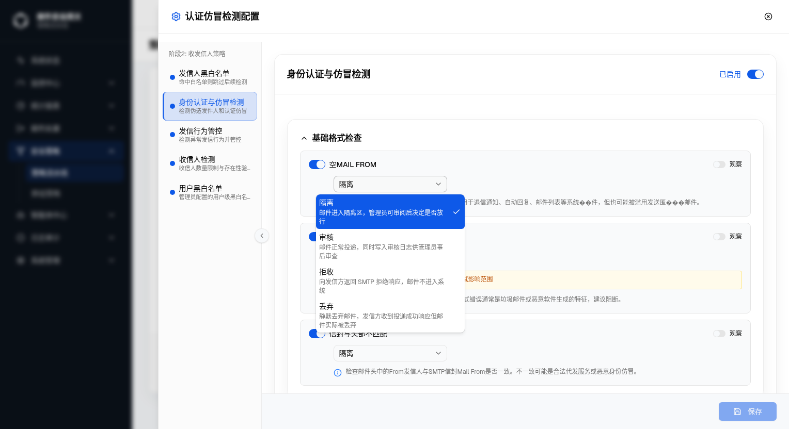
S-21 · 执行动作下拉展开态。四个选项各带一行灰色说明文字（muted-foreground），下拉宽度扩至 288px（w-72）与发信人黑白名单保持一致。
| 选项 | 标签 | 说明文字（zh） | 说明文字（en） |
|---|---|---|---|
| quarantine | 隔离 | 邮件进入隔离区，管理员可审阅后决定是否放行 | Move the email to the quarantine queue for administrator review before release or deletion |
| audit | 审核 | 邮件正常投递，同时写入审核日志供管理员事后审查 | Deliver the email normally and write an audit log entry for later administrator review |
| reject | 拒收 | 向发信方返回 SMTP 拒绝响应，邮件不进入系统 | Return an SMTP rejection response to the sender; the email never enters the system |
| discard | 丢弃 | 静默丢弃邮件，发信方收到投递成功响应但邮件实际被丢弃 | Silently drop the email; the sender receives a delivery-success response but the email is discarded |
| 项目 | 内容 |
|---|---|
| 组件 | FormatChecksSection.tsx 中 FormatCheckCard |
| 新增 hook | const tDesc = useTranslations('authSpoofing.formatActionDesc') |
| 下拉宽度 | SelectContent className="w-72"（288px） |
| 选项布局 | 每个 SelectItem 内用 flex-col gap-0.5 两行：标签 + text-xs text-muted-foreground 说明 |
| i18n key | authSpoofing.formatActionDesc.{quarantine|audit|reject|discard}（四语言） |
| 项目 | 内容 |
|---|---|
| 根因 |
AuthFlowDiagram.tsx 节点行容器原 class 为 flex items-center gap-2 overflow-x-auto pb-2，仅有底部 8px 留白，顶部无留白。节点选中态使用 ring-2 ring-primary ring-offset-2（ring 2px + offset 2px = 向外扩展 4px），顶部溢出 4px 被 overflow-x-auto 的裁切边界截断，导致选中框上边缘不可见。
|
| 修复方案 | 将节点行容器 class 由 pb-2 改为 py-1（上下各 4px），为 ring-offset(2px) + ring(2px) 共 4px 的向外溢出提供精确顶部留白，同时底部也保持视觉留白。 |
| 修改文件 | src/components/security/auth-spoofing/AuthFlowDiagram.tsx 第 73 行，仅 1 处 class 变更 |
| 影响范围 | 仅 AuthFlowDiagram 节点行容器顶部留白；交互逻辑、节点颜色、点击回调、其他模块均不受影响 |
修复前（Bug 复现）
ring-2 ring-primary ring-offset-2 的上边缘 4px 被容器裁切，紫色选中框仅显示左/右/下三边，顶边不可见。
状态 A — 修复后：SPF 节点选中态（默认激活）
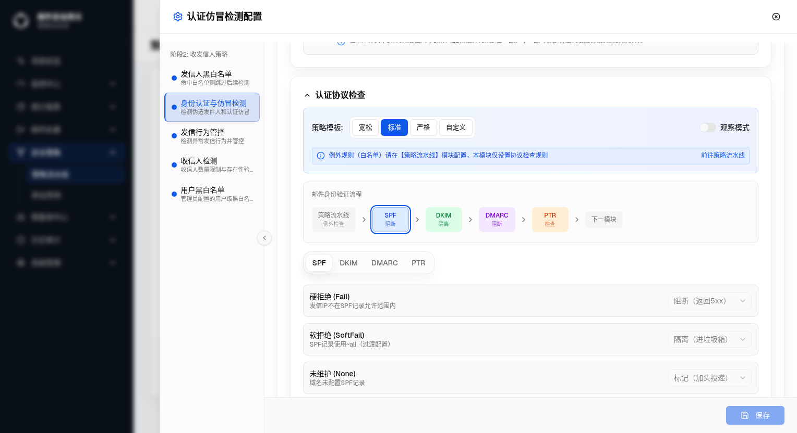
S-24 · SPF 节点选中态（修复后）。蓝色 ring-2 ring-primary ring-offset-2 边框四边完整可见，顶部 4px 留白（py-1）恰好容纳溢出的 ring。Tab 栏联动切换至「SPF」，下方显示 SPF 协议规则（硬拒绝/软拒绝/未维护）。
状态 B — 修复后：DMARC 节点选中态
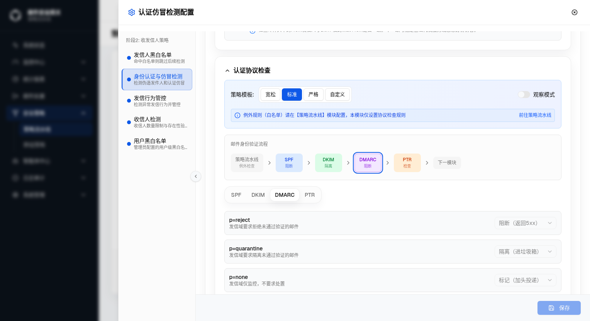
S-25 · DMARC 节点选中态（修复后）。紫色边框四边完整，上边缘不再被裁切（Bug 复现时此边缘缺失）。下方 Tab 联动切换至「DMARC」，显示 p=reject / p=quarantine / p=none 三条规则。
状态 C — 修复后：PTR 节点选中态
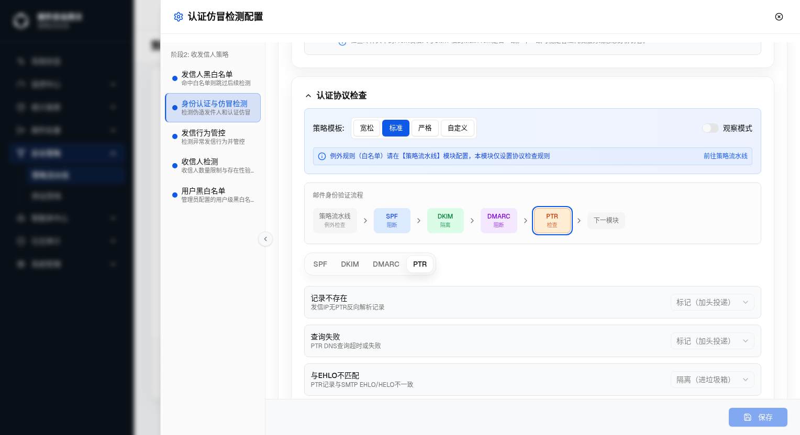
S-26 · PTR 节点选中态（修复后）。橙色边框四边完整。下方 Tab 联动切换至「PTR」，显示记录不存在 / 查询失败 / 与EHLO不匹配三条规则。
| 元素 | 变更前 | 变更后 | 说明 |
|---|---|---|---|
节点行容器（AuthFlowDiagram 第 73 行） |
flex items-center gap-2 overflow-x-auto pb-2 |
flex items-center gap-2 overflow-x-auto py-1 |
将单侧 pb-2（8px）改为双侧 py-1（上下各 4px）；顶部新增 4px 留白，使 ring-offset-2 + ring-2 的 4px 向外扩展不再被裁切 |
节点选中态样式（FlowNodeButton） |
ring-2 ring-primary ring-offset-2（未变更） |
选中态样式本身无误；问题在于容器没有为其预留顶部空间 | |
| 可点击节点（SPF / DKIM / DMARC / PTR） | 选中时上边缘 ring 被裁切 | 选中时四边 ring 完整显示 | 全部 4 个协议节点均受益于此修复 |
| 不可点击节点（策略流水线·例外检查 / 下一模块） | 无变化（cursor-default，无 ring 样式） |
视觉与行为均不受影响 | |
移除前（用户提交的 Bug 报告截图）
状态 A — 移除后：认证协议检查区块默认态
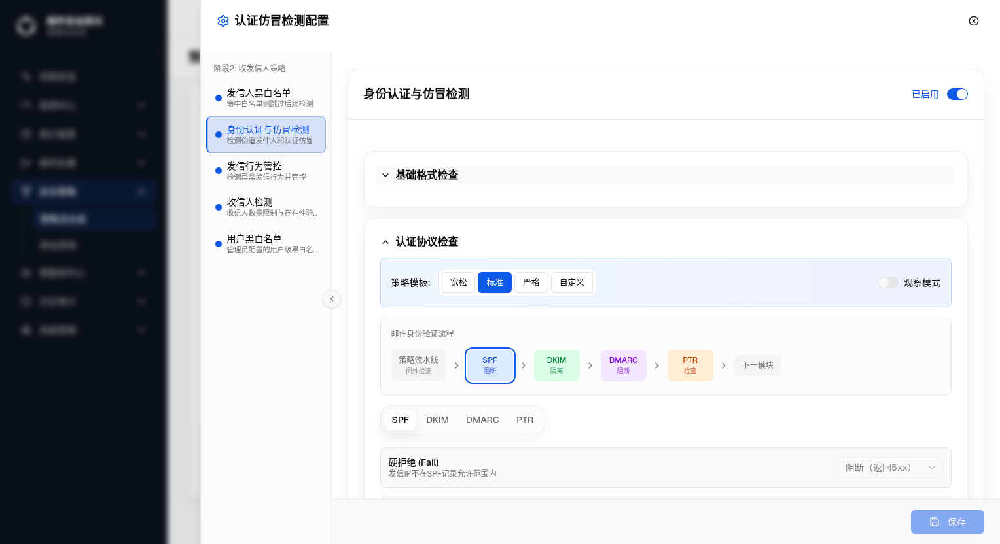
S-27 · 认证协议检查默认态（移除后，AI版·单租户，zh，dark，1528×832）。区块顶部蓝色例外配置说明条已消失；内容直接从策略模板选择器（宽松 / 标准 / 严格 / 自定义，当前选中「标准」）和观察模式开关开始；邮件身份验证流程图（SPF 阻断 → DKIM 隔离 → DMARC 阻断 → PTR 检查）完整可见；当前激活 Tab 为「SPF」，下方展示「硬拒绝 (Fail)」规则。
| 元素 | 变更前 | 变更后 | 说明 |
|---|---|---|---|
| 蓝色例外配置说明条 |
显示于认证协议检查区块顶部：Info 图标（blue-600）+ 文案「例外规则（白名单）请在【策略流水线】模块配置，本模块仅设置协议检查规则」+ 右对齐「前往策略流水线」Link 按钮 i18n key： authSpoofing.exceptionBanner
|
已完全移除，不再渲染 | 整块 div.flex.items-center.gap-2.rounded.border.border-blue-200 从 JSX 中删除；Info 图标导入同步移除；i18n key exceptionBanner 保留（避免影响其他潜在引用） |
| 「前往策略流水线」Link 按钮 | 显示于蓝色条右侧，i18n key：authSpoofing.goToPipeline |
随父容器一并移除 | goToPipeline key 在 ExceptionRulesEntry.tsx 中仍有引用，i18n key 保留不删 |
| 认证协议检查区块内容顺序 | 蓝色说明条 → 策略模板行 → 邮件身份验证流程 → Tab 栏 + 规则列表 | 策略模板行 → 邮件身份验证流程 → Tab 栏 + 规则列表 | 视觉减少一行高度，内容区更紧凑 |
| 修改文件 | src/components/security/auth-spoofing/ProtocolChecksSection.tsx：移除 7 行 JSX（div 容器、Info 图标、span 文案、Button）及 Info 图标导入 |
||
状态 A — 标准模板 · DMARC Tab（新增两行后完整五行）
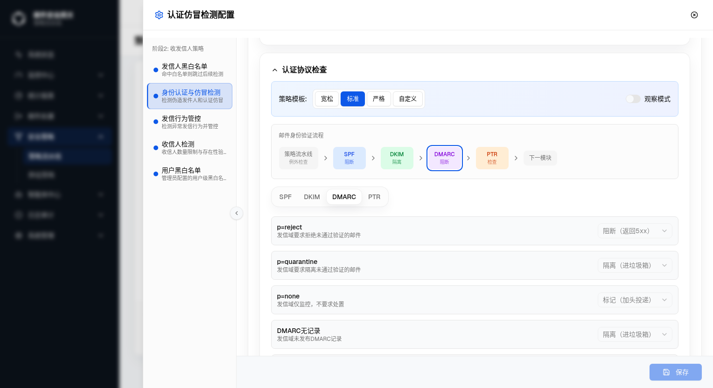
S-28 · DMARC Tab 五行（标准模板，AI版·单租户，zh，dark，1528×832，2026-08-01）。可见前四行：p=reject→阻断（返回5xx）、p=quarantine→隔离（进垃圾箱）、p=none→标记（加头投递）、DMARC无记录「发信域未发布DMARC记录」→隔离（进垃圾箱）；第五行「DMARC查询失败」因内容区容器固定高度被裁切在视口外，已通过 snapshot 可访问性树确认渲染正确（见1.3）。
| 场景 key | 显示标题（zh） | 显示描述（zh） | 标准模板默认 action | 宽松模板默认 action | 严格模板默认 action | i18n key（标题/描述） |
|---|---|---|---|---|---|---|
no_record |
DMARC无记录 | 发信域未发布DMARC记录 | 隔离（进垃圾箱） | 标记（加头投递） | 隔离（进垃圾箱） | authSpoofing.protocolChecks.dmarc_no_recordauthSpoofing.protocolChecks.dmarc_no_recordDesc |
query_fail |
DMARC查询失败 | DNS查询DMARC记录时发生错误（超时/SERVFAIL） | 标记（加头投递） | 标记（加头投递） | 隔离（进垃圾箱） | authSpoofing.protocolChecks.dmarc_query_failauthSpoofing.protocolChecks.dmarc_query_failDesc |
UI 行为：标准/严格模板下 Select 禁用（lockNonCustom=true），切换「自定义」后可编辑，可用动作集合与其他 DMARC 行一致（隔离/审核/拒收/丢弃/标记）。两行在 DMARC Tab 中位于 p=none 行之后，顺序固定。
|
||||||
| 修改文件 | 变更内容 |
|---|---|
ProtocolChecksSection.tsx |
PROTOCOL_GROUPS dmarc keys 数组追加 'no_record'、'query_fail' |
auth-spoofing-templates.ts |
三个模板（loose/standard/strict）dmarc 对象各追加两个 key 的默认 action；applyGroup 函数新增「补全模板中有但 config 中缺失的 key」逻辑，防止新增 key 在非 custom 模板下 fallback 为 accept |
AuthSpoofingPage.tsx |
DEFAULT_CONFIG.protocol_checks.dmarc 追加 no_record/query_fail 两项（与 standard 模板默认值一致），确保初始 state 与 mock 合并后包含完整五个 key |
fixtures.ts |
mock dmarc 对象追加 no_record: { enabled: true, action: 'quarantine' }、query_fail: { enabled: true, action: 'audit' } |
messages/zh.json、en.json、ru.json、th.json |
各追加 4 个 i18n key：dmarc_no_record、dmarc_no_recordDesc、dmarc_query_fail、dmarc_query_failDesc（四语言，共 16 个 key） |
StaticText "DMARC查询失败"、StaticText "DNS查询DMARC记录时发生错误（超时/SERVFAIL）"、combobox: 标记（加头投递）），因弹窗内容区容器固定高度导致视口截图未能完整展示第五行，非渲染异常。
触发路径：策略流水线 → 身份认证与仿冒检测「配置」→ 弹窗打开 → 认证协议检查区域
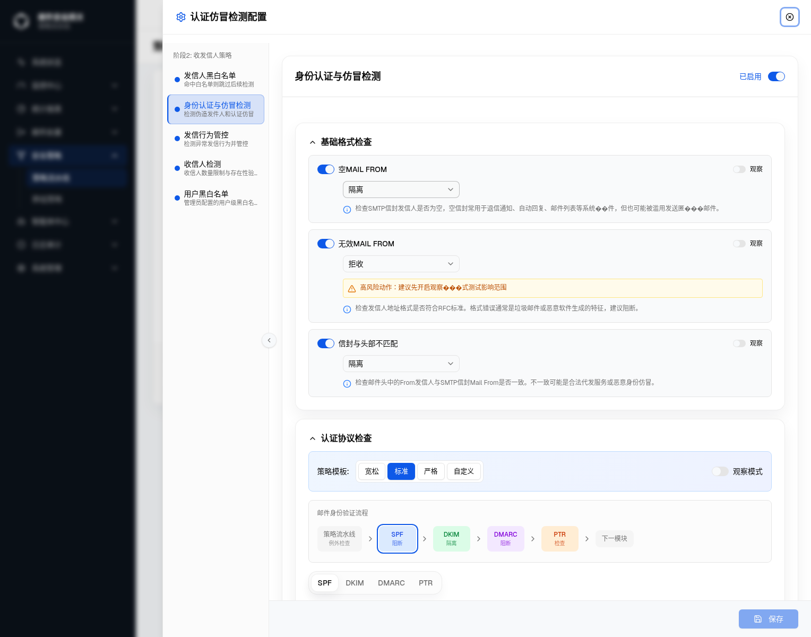
/zh/security/pipeline｜视口：1528×1200｜主题：深色｜形态：AI版-单租户｜角色：租户管理员
| 节点 | 修复前 badge（硬编码单 key） | 修复后 badge（dominantAction） | 依据（标准模板最严重 action） |
|---|---|---|---|
| SPF | 隔离（读取 config.spf.fail.action，值为 quarantine） | 阻断 | 标准模板 spf.fail=reject，severity 最高 |
| DKIM | 隔离（读取 config.dkim.fail.action） | 隔离 | 标准模板 DKIM 所有 key 中最严为 quarantine |
| DMARC | 隔离（读取 config.dmarc.reject.action） | 隔离 | 标准模板 DMARC 所有 key 中最严为 quarantine |
| PTR | 检查（读取 config.ptr.ehlomismatch.action） | 检查 | PTR 节点固定显示「检查」（isPtr=true） |
修复验证：截图 S-29 可见标准模板下 SPF 节点正确显示「阻断」（修复前该节点错误显示「隔离」，因为硬编码只读了 config.spf.fail.action=quarantine 这一个 key）。
| 维度 | 说明 |
|---|---|
| 根因 |
ProtocolChecksSection.tsx 中 flowFailActions 硬编码读取单一 sub-key（如 config.spf.fail.action、config.dmarc.reject.action），导致当用户将所有规则改为低严重度 action（如 audit/accept）后，流程图节点 badge 仍显示被硬编码 key 的旧值（如隔离）。
|
| 修复方案 |
新增 dominantAction(group) 函数，遍历协议组内所有 CheckItem，按 discard(5)>reject(4)>quarantine(3)>audit(2)>accept(1) 严重度排序，返回最严重的 action；flowFailActions 改为 dominantAction(config.spf/dkim/dmarc/ptr)。
|
| 附带修复 |
flowSubKey() 补充了 audit→flowSub.tag（标记）、accept→flowSub.pass（进行下一步检测）两个分支——原来二者均 fallback 到 flowSub.quarantine（隔离），导致「标记」和「进行下一步检测」在流程图中均错误显示为「隔离」。
|
| i18n | 四语言（zh/en/ru/th）各追加 flowSub.tag 和 flowSub.pass 两个 key。 |
| 文件 | 变更 |
|---|---|
src/lib/auth-spoofing-labels.ts |
1. flowSubKey() 新增 audit→'flowSub.tag'、accept→'flowSub.pass' 分支（原 fallback 为 flowSub.quarantine）；2. 新增 ACTION_SEVERITY 常量（5 个等级）；3. 新增 dominantAction(group, fallback) 函数，返回组内最严重 action。
|
src/components/security/auth-spoofing/ProtocolChecksSection.tsx |
1. 导入 dominantAction；2. flowFailActions 从硬编码单 key（config.spf.fail.action 等）改为 dominantAction(config.spf/dkim/dmarc/ptr)。
|
messages/zh.json、en.json、ru.json、th.json |
各追加 authSpoofing.flowSub.tag（标记 / Tag / Пометить / แท็ก）和 authSpoofing.flowSub.pass（进行下一步检测 / Pass / Передать дальше / ผ่านไปยังขั้นตอนถัดไป）。 |
| 元素 / 可见性 | 形态/角色差异 |
|---|---|
| 流程图 SPF/DKIM/DMARC/PTR 节点 badge | [Base] — 所有形态/角色一致，badge 文案取自 flowSubKey(dominantAction(group)) |
| 「标记（加头投递）」选项对应的流程图 badge | [Base] — 修复后正确显示「���记」，不再显示「隔离」 |
| 「进行下一步检测」选项对应的流程图 badge | [Base] — 修复后正确显示「进行下一步检测」，不再显示「隔离」 |
状态 A — 标准模板 · 认证协议检查 SPF Tab · Select 关闭态（Trigger 短名）
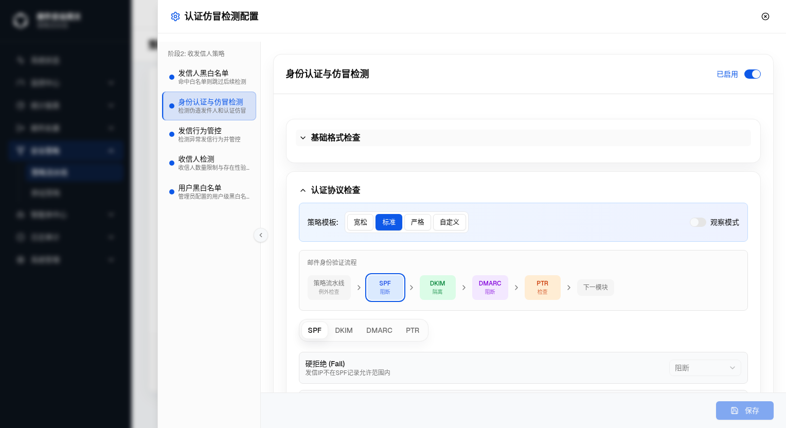
S-30 · Select Trigger 短名（标准模板，AI版·单租户，zh，dark，1528×832，2026-08-01）。可见 Select Trigger 仅显示「阻断」短名，不再带括号注释（旧格式：「阻断（返回5xx）」）；宽度从 160px 收窄至 140px。
状态 B — 自定义模板 · 认证协议检查 SPF Tab · Select 展开态（两行选项）
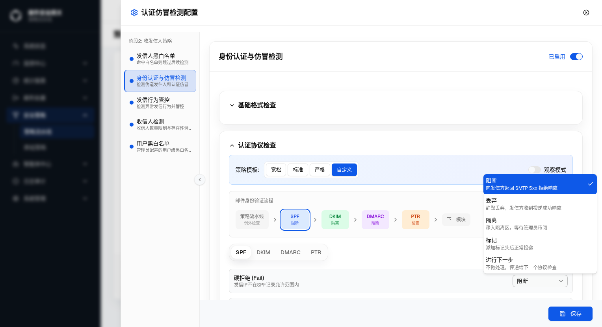
S-31 · Select 展开态（自定义模板，AI版·单租户，zh，dark，1528×832，2026-08-01）。下拉面板宽 w-72（288px），不与 Trigger 宽度对齐；五个选项每项两行：第一行为粗体短名（阻断/丢弃/隔离/标记/进行下一步），第二行为灰色描述文案；当前选中项「阻断」右侧显示蓝色勾选图标。
参照格式对比
| 维度 | 发信人黑白名单（参照格式） | 认证协议检查·修改前 | 认证协议检查·修改后 |
|---|---|---|---|
| Trigger 宽度 | 随内容自适应 | w-[160px] |
w-[140px] |
| Trigger 显示文案 | 短名（拒收 / 隔离 / 投递 / 丢弃） | 长名含括号注释（阻断（返回5xx）/ 隔离（进垃圾箱）/ 标记（加头投递）/ 进行下一步检测） | 短名（阻断 / 丢弃 / 隔离 / 标记 / 进行下一步） |
| SelectContent 宽度 | w-72，不与 Trigger 对齐 |
默认宽度，跟随 Trigger | w-72，alignItemWithTrigger={false} |
| SelectItem 布局 | 两行：短名 + text-xs text-muted-foreground 描述 |
单行：长名含括号注释 | 两行：短名 + text-xs text-muted-foreground whitespace-normal leading-snug 描述 |
五个执行动作短名与描述文案（zh）
| action key | 短名（protocolActionShort） | 描述文案（protocolActionDesc） | i18n key（短名 / 描述） |
|---|---|---|---|
reject |
阻断 | 向发信方返回 SMTP 5xx 拒绝响应 | authSpoofing.protocolActionShort.reject / authSpoofing.protocolActionDesc.reject |
discard |
丢弃 | 静默丢弃，发信方收到投递成功响应 | authSpoofing.protocolActionShort.discard / authSpoofing.protocolActionDesc.discard |
quarantine |
隔离 | 移入隔离区，等待管理员审阅 | authSpoofing.protocolActionShort.quarantine / authSpoofing.protocolActionDesc.quarantine |
audit |
标记 | 添加标记头后正常投递 | authSpoofing.protocolActionShort.audit / authSpoofing.protocolActionDesc.audit |
accept |
进行下一步 | 不做处理，传递给下一个协议检查 | authSpoofing.protocolActionShort.accept / authSpoofing.protocolActionDesc.accept |
可见性：可用 action 集合由各 Tab 的 PROTOCOL_GROUPS[key].actions 决定，非全部五项在所有 Tab 中均出现。禁用态：标准/严格/宽松模板下 Select 禁用（ lockNonCustom=true），Trigger 仍显示短名，下拉不可展开；切换为「自定义」模板后可编辑。
|
|||
| 修改文件 | 变更内容 |
|---|---|
src/lib/auth-spoofing-labels.ts |
新增 protocolActionShortKey(a) 和 protocolActionDescKey(a) 两个映射函数，分别返回 protocolActionShort.{a} 和 protocolActionDesc.{a} i18n key |
messages/zh.json、en.json、ru.json、th.json |
各追加 authSpoofing.protocolActionShort.*（5 项短名）和 authSpoofing.protocolActionDesc.*（5 项描述文案），四语言共 40 个 i18n key |
src/components/security/auth-spoofing/ProtocolChecksSection.tsx |
1. 导入替换：protocolActionKey → protocolActionShortKey + protocolActionDescKey；2. SelectTrigger： w-[160px] → w-[140px]，SelectValue 改用 protocolActionShortKey；3. SelectContent：追加 alignItemWithTrigger={false} className="w-72"；4. SelectItem 内容：由单行长名改为两行 div（短名 + text-xs text-muted-foreground whitespace-normal leading-snug 描述行）
|
| 元素 | 形态/角色差异 |
|---|---|
| Select Trigger 短名文案 | [Base] — 所有形态/角色一致 |
| SelectItem 两行布局 | [Base] — 所有形态/角色一致 |
| Select 禁用态（非自定义模板） | [Base] — 所有形态/角色一致，标准/严格/宽松模板下禁用，Trigger 仍显示短名 |
| 编号 | 状态 | 描述 | 复核日期 | 处理说明 |
|---|---|---|---|---|
| D-1 | 已解决 | v1 规格草稿无真实截图，所有交互预览均为文字占位 | 2026-08-01 | v2 已完成全部 7 张真实浏览器截图（S-12 ~ S-18），覆盖 6 个变更点的关键状态 |
| D-2 | 待验证 | 白名单「查看配置示例」展开后的展示内容未截图（修复后应展示白名单示例而非黑名单示例） | 2026-08-01 | 下次迭代补充截图；源码已确认修复逻辑，见 SenderFilterDrawer.tsx |
| D-3 | 待验证 | 白名单执行动作下拉展开态（投递/标记投递含说明文字）未单独截图 | 2026-08-01 | 下次迭代补充截图（S-19）；见 Q-2 |
| D-4 | 已记录 | GT-12700：遗留 accept action 通过前端 normalizeFormatItem() fallback 为 quarantine，后端存量数据迁移策略未明确 |
2026-08-01 | 前端 fallback 已实现；后端兼容待确认（Q-3） |
| D-5 | 已解决 | GT-12701：邮件身份验证流程节点选中态（ring-2 ring-primary ring-offset-2）上边缘被 overflow-x-auto 容器裁切，选中框仅显示三边 |
2026-08-01 | 已修复：节点行容器 class pb-2 → py-1，顶部留白 4px 恰好容纳 ring 溢出；浏览器截图 S-24~S-26 验证四节点选中态均完整显示 |
| D-6 | 已移除 | GT-12705：认证协议检查区块顶部蓝色例外配置说明条（exceptionBanner）已移除；「前往策略流水线」Link 按钮随之消失 |
2026-08-01 | 已移除：ProtocolChecksSection.tsx 删除整块 div（7 行 JSX）及 Info 导入；i18n key exceptionBanner 和 goToPipeline 保留（后者在 ExceptionRulesEntry.tsx 仍有引用）；截图 S-27 验证移除后状态 |
| D-7 | 已解决 | GT-12707：DMARC检查缺少「DMARC无记录」（no_record）和「DMARC查询失败」（query_fail）两个技术异常场景，与 SPF temperror/permerror、PTR norecord/temperror 不对齐 |
2026-08-01 | 已新增：PROTOCOL_GROUPS dmarc keys 追加两项；三模板补充默认 action；applyGroup 修复新增 key 的 fallback 逻辑；DEFAULT_CONFIG/fixtures 同步补全；四语言各追加 4 个 i18n key；snapshot 可访问性树验证五行均正确渲染（截图 S-28） |
| D-8 | 已解决 | GT-12708：流程图节点 badge 硬编码读取单一 sub-key，导致将所有规则改为「标记」/「进行下一步检测」后节点仍显示「隔离」；且 flowSubKey() 缺少 audit/accept → flowSub.tag/flowSub.pass 的映射，二者均 fallback 为 flowSub.quarantine |
2026-08-01 | 已修复：新增 dominantAction() 函数遍历协议组所有 CheckItem 按 5 级 severity 返回最严重 action；flowFailActions 改用 dominantAction(config.spf/dkim/dmarc/ptr)；flowSubKey() 补充 audit/accept 两个分支；四语言各追加 flowSub.tag/flowSub.pass；截图 S-29 验证标准模板 SPF 节点正确显示「阻断」 |
| D-9 | 已优化 | GT-12713：认证协议检查的 Select 执行动作格式与发信人黑白名单不一致——Trigger 显示长名含括号注释（如「阻断（返回5xx）」），SelectItem 仅单行文案，SelectContent 宽度跟随 Trigger（160px），与参照格式（短名 + 两行、w-72 面板）差异明显 | 2026-08-01 | 已优化：新增 protocolActionShortKey()/protocolActionDescKey()；四语言各追加 10 个 i18n key（共 40 个）；Trigger 改为 140px 短名、SelectContent 改为 w-72 alignItemWithTrigger=false、SelectItem 改为两行布局；截图 S-30（Trigger 短名）/ S-31（展开五选项两行格式）验证 |
| 编号 | 状态 | 问题描述 | 影响范围 | 优先级 |
|---|---|---|---|---|
| Q-1 | 待确认 | 云-多 / AI-多 / 传统-多 · 租户管理员视角下，发信人黑白名单配���弹窗是否与单租户平台管理员视角一致？（源码未见形态/角色分支，推断一致，未实测） | 产品形态 × 角色矩阵 | 低 |
| Q-2 | 待确认 | 白名单执行动作下拉（投递 / 标记投递）是否也新增了说明文字？说明文字内容是什么？ | 变更 #3、D-3 | 中 |
| Q-3 | 待确认 | GT-12700：后端存量数据中 format_checks.*.action = "accept" 的兼容处理策略？前端已加 normalizeFormatItem() fallback，但保存时是否会将 quarantine 写回覆盖旧值，是否需要后端迁移脚本？ |
GT-12700 变更 1、D-4 | 中 |
| 版本 | 日期 | commit | ticket | 摘要 |
|---|---|---|---|---|
| v1 | 2026-08-01 | 9531e5b |
GT-12695 | 草稿：基于对话历史生成 6 个变更点框架，无真实截图，交互预览均为文字占位。 |
| v2 | 2026-08-01 | 9531e5b |
GT-12695 | 完整重生成：补充全部 7 张真实浏览器截图（S-12 ~ S-18），覆盖变更规格菜单入口、策略流水线页、黑名单列表（8列）、黑名单抽屉默认态、执行动作下拉展开态、白名单列表（8列）、白名单抽屉默认态；完善逐元素说明、差异标注（D-1~D-3）和待确认事项（Q-1~Q-2）。 |
| v3 | 2026-08-01 | GT-12695 |
GT-12700 | 追加 GT-12700 需求节（2 个变更点）：① 执行动作统一为隔离/审核/拒收/丢弃（移除 accept，新增 audit，文案精简）；② 下拉新增各选项说明文字（288px 宽，i18n formatActionDesc）。补充真实截图 S-19~S-23（共 5 张）；更新目录、差异标注（新增 D-4）、待确认事项（新增 Q-3）。 |
| v4 | 2026-08-01 | GT-12695 |
GT-12701 | 追加 GT-12701 需求节（1 个变更点）：邮件身份验证流程节点选中态上边缘裁切 Bug 修复（pb-2 → py-1）。补充真实截图 S-24~S-26（SPF/DMARC/PTR 三节点选中态修复后验证）；更新目录（新增 GT-12701 卡片块）、差异标注（新增 D-5 已解决）；版本历史追加 v4。 |
| v5 | 2026-08-01 | GT-12695 |
GT-12705 | 追加 GT-12705 需求节（1 个变更点）：移除认证协议检查区块顶部蓝色例外配置说明条（exceptionBanner + 前往策略流水线 Link）；i18n key 保留；补充真实截图 S-27（移除后默认态验证）；目录追加 GT-12705 卡片块；差异标注新增 D-6（已移除）；版本历史追加 v5。 |
| v6 | 2026-08-01 | GT-12707 | 追加 GT-12707 需求节（1 个变更点）：DMARC检查新增「DMARC无记录」（no_record）和「DMARC查询失败」（query_fail）两个技术异常场景；修改 5 处文件（ProtocolChecksSection.tsx、auth-spoofing-templates.ts、AuthSpoofingPage.tsx、fixtures.ts、四语言 JSON 共 16 个 i18n key）；applyGroup 修复新增 key 的 fallback 逻辑；目录追加 GT-12707 卡片块；补充截图 S-28（DMARC Tab 五行，标准模板）；差异标注新增 D-7（已解决）；版本历史追加 v6。 | |
| v7 | 2026-08-01 | GT-12708 | GT-12708 v7（SPF/DKIM/DMARC策略显示的执行配置与实际设置的配置不符问题解决）：追加 GT-12708 需求节（1 个变更点）：修复流程图节点 badge 硬编码单 key 读取 bug；新增 dominantAction() 函数按 5 级 severity 计算协议组最严重 action；flowSubKey() 补充 audit→flowSub.tag、accept→flowSub.pass 两个分支；四语言各追加 2 个 i18n key（共 8 个）；目录追加 GT-12708 卡片块；补充截图 S-29（标准模板流程图节点修复后：SPF阻断、DKIM隔离、DMARC隔离、PTR检查）；差异标注新增 D-8（已解决）；版本历史追加 v7。 | |
| v8 | 2026-08-01 | GT-12713 | GT-12713 v8（认证协议检查执行动作解释格式参照发信人黑白名单）：追加 GT-12713 需求节（1 个变更点）：Select 格式对齐发信人黑白名单——Trigger 改为短名（140px），SelectContent 改为 w-72 + alignItemWithTrigger=false，SelectItem 改为短名+灰色描述文案两行布局；新增 protocolActionShortKey()/protocolActionDescKey() 映射函数；四语言各追加 protocolActionShort/protocolActionDesc 共 10 个 key（合计 40 个）；目录追加 GT-12713 卡片块；补充截图 S-30（Trigger 短名关闭态）/ S-31（展开态五选项两行格式）；差异标注新增 D-9（已优化）；版本历史追加 v8。 |